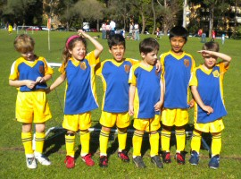
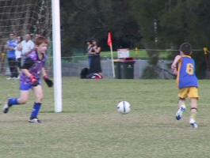

| Match Report - 17 April 2010 |
|
|
|
|
|
|
|
|
|
|
Opening game of the season come around all so slow but is finally here bringing all
but 1 player making their débuts for North Ryde Soccer club. The proud boys wearing
their new boots, socks, jerseys and pants started off strong and as we know Saints
United always come to the grounds ready to play, but the mini North Ryde boys were
up for the challenge.

Big bustling Nick has taken some pointers from big brother Jarrod opening the scoring
for North Ryde with some hard work up the middle of the park leaving the ball in the
back of the net on more than one occasion. Jack turned up the heat mid way through
the first half with some bustling time on the ball out on the fingers once his
attention was away from waving to the large team fan base on the side line. And wow
what a start from Hayden scoring in his first appearance in the blue and gold, taking
nothing from Dad (retired veteran of North Ryde), Hayden can score goals, some nice
close dibbling skills giving Hayden good field position for his first.
North Ryde welcomes back Felix with some enthusiastic play around the middle, giving
our boys better field position, backed up by Jayden's strong defence down in the
defensive part of the park. Cooper the work horse never giving in showed what the
Cassettini boys have done and continue to do, Happy Birthday Dad (Rob).
Great to see everyone down at the ground giving support to our up and coming soccer
stars and I'm sure like me, loved every minute. It was a great start boys and keep
up the good work and continue to enjoy yourselves.
Man of the match was awarded to Jack Ando for having fun and having a go.

- David Anderson
|
|
|
| U6 Red A |
|
North Ryde Red A 5 - North Ryde Red B 7
|
|
|
|
It was the opening of the season and the team was looking forward to kick off. It
was a beautiful Saturday morning and the field was perfect.
The team had a great start. Alex and Archie were in there right away. Will and
Jayden both tried their hardest. Cameron and Lucas, came on after 5 minutes and
contributed a lot.
Will ran well and was often found in open spaces. Jayden had moments of full
commitment. Archie started the goal count and after two goals took to the team
approach, making great passes of the ball. He could have been mistaken for Lionel
Messi, scoring a brilliant lob goal later in the game.
Alex followed up and scored a great goal, and was close to putting a second one
in the net. Cameron did some great running and had a beautiful turn and kick up
the sideline. Lucas had his midfield defence hat on today, with some excellent
blocks, great passing of the ball and defending back.
Although a small loss, there were a lot of positives. The season is looking to
be a fantastic experience for everyone.
Congratulations to the player of the week: Archie
- Coach Marc
|
|
|
|
|
|
The U6 White A team got off to a flying start this year with a great win against
Holy Cross in the first round of the season.

The boys all did an outstanding job and played well together in their first game
as a team. Ashton and Ben led the team with their experience while Oliver, Toby,
Max and Ryan were fantastic in their first ever game of soccer.
North Ryde led 6-0 at half time and went on in great form in the 2nd half to win
the game with a score of 15-0.
Well done boys!
|
|
|
| U7 Red B |
|
North Ryde - Gladesville Ravens
|
|
|
|
"It was good. It was fun. It was tiring. Fletcher played the best."
- Patrick Milne
|
|
|
|
|
|
There was a lot of excitement for the first game of the season as we awaited kick-off.
It was a beautiful autumn morning complete with lovely sunshine. We had our full team
of players today. There was a lot of nervous energy and then the whistle blew. They
were off.
North Ryde White A team started well against All Saints Hunters Hill B. It was a
fairly even first half with both teams scoring goals. We saw some excellent attacking
work from Isaak and Ibrahim and both players had great goal kicks.
The second half saw the other team dominate a little more than us. There was some
great defending from Dom and Emma. We saw Jake and Leo doing some terrific assistance
and a great dribbling run from Sam. Emma did some great passes. Some second half goals
were scored.
A great game was played by the Under 7 White A team today. Our player of the week award
goes to Isaak who was persistent in following the play and the ball.
Well done to all for a great start to the season.
- Sally
|
|
|
|
|
|

The first game of the season and the first game ever for the majority of our team.
It was picture perfect with a team photo prior to the game commencing and then the
first goal of the match - great work Rishi.
Our teams little legs got tired in the heat trying to chase those Putney U7's and
even though our team tried to commence half time 6 minutes early (easy mistake),
we made all made our way through to the final whistle.
Everyone was proud of each other and we certainly learnt a few things along the way.
- Sarah Robson
|
|
|
|
|
|
OOOOOOOhhhhhhhhhh what a start to the season!
Big trip, great day and a heap of goals out there in the sticks at Glenhaven but
worth every minute driving to see these boys put on such a great spectacle. Straight
from the start the ref struggled keeping up with the pace of the game with the goals
coming thick and fast.
Rampaging Blake's ferocious hunger for the ball put the lads in good field position
straight from the whistle with Jarrod again showing us how to take it to the goal in
easy fashion along with Luke Ando following on from last year with a goal and a great
deal of strength on the ball.
Structure and field position was obvious with Jay's strength at the back with desperate
sliding tackles defending shots on goal and Luke M showing us composure also at the
back giving good team play up and around the fringe's time and time over leading to
more goals. Good signing of Aden this year just added to the skills and goal tally,
scoring machine. Caiden again shows us how well he reads the game in anticipating the
cover defence with good passes to the forwards.
All across the park was dominated from the North Ryde boys and was a joy to watch but
hard to keep up with play when refereeing.

Great start to the year with Luke Ando taking the man of the match for his strength on
the ball with great dribbling and passing.
Keep it going and enjoy it boys.
- David Anderson
|
|
|
|
|
|
A warm sunny day for the first round of competition. Being school holidays we had a
couple of players away, so our 7 players played the whole game against an opposition
team that had 3 reserves and were bringing fresh legs onto the field regularly.
It was an exciting game where the teams were going goal for goal. Some good passing,
great running, and use of free space shows the potential of the team. Daniel P and
William each played a half as goalie and made some good saves. Zach ran many lengths
of the field, Alex achieved 4 kicks in a row and then retrieved the ball from an
opposition player in one nice attacking play. Danny made some good passes, and goals
to Daniel B & Tim were celebrated by all.
Tim earnt the weekly trophy award for using free space well so his team mates could
pass the ball through to him.
Everyone went home tired, but having had fun and happy with a good result.
|
|
|
|
|
|
So much for winter. Or autumn for that matter. Saturday morning became progressively
warmer as the day wore on, ignoring the expected decline in temperature for this
time of year in favour of pushing the stamina and endurance of the U10 players to
the max, who, for their part, were already facing up to the dubious challenge of
the 2009 premiership title-holders Normanhurst Eagles.
The heat did not appear to affect the players, however, and to their credit the
fitness of both sides was admirable in their ability to give it everything they
had for the full duration of the game.
Normanhurst came out of the starting blocks at full tilt and dominated the first
ten minutes of the game with impressive speed and a slick passing game, but were
unable to convert any of their opportunities onto the scoreboard. The North Ryde
defence held firm during these initial exchanges until they started to find their
feet midway through the second half. Their passing shots were on song and excellent
ball was being fed through the midfield, creating several opportunities for the
forwards. Their first goal, however, came in rather incongruous circumstances when
Adam's corner kick was fumbled in the goal mouth and crept over the line after an
unfortunate rally of what appeared to be pinball-style ricochets between keeper
and defender.
Their second goal was more stylish, and reminiscent of the second goal scored against
West Pennant Hills a week ago. The ball raced through to the forwards at pace with
some smart switching between the defence and midfield, and the ubiquitous Shannon
was on hand to collect it just inside the keepers box and punch it past both defender
and keeper. A great movement and a great goal, but a thought must be spared for the
Normanhurst keeper whose balance was momentarily thwarted when the defender directly
in front of him instinctively flung his foot out and deflected the ball in his attempt
to intercept the shot at goal.
Two goals up at the break was a rare luxury against this polished opponent, but North
Ryde had put their backs into it where it counted in all aspects of their game, solid
defence, good passing shots, and creating opportunities up front. Patrick and Tom H
both had a cracking game in the defence and midfield, winning many of their 50 - 50
exchanges, while Tim once again put his body on the line to keep the scoreline secure.
The second half began in a similar manner as the first half had for North Ryde.
Normanhurst were again in the driving seat, pushing our defences to the limit and
we had to dig deep to keep the blue jerseys at bay. There was a period of some
relatively desperate defence in the first few minutes and balls were being cleared
off the goal line on more than one occasion. Normanhurst finally broke the barrier
with a timely movement and scored their first to bring the goal difference back to
within one.
True to form, North Ryde once again dragged themselves out of the doldrums and began
to maintain consistent and lengthier possession of the ball, spreading it out wide
and fizzing through the midfield once again. Jett and Tom M used their speed and
strength on the left and right sides of the field respectively to work the ball
forward while Charlie and David kept the midfield engine ticking over. Jack, Oscar
and Christopher secured the defence while Adam and Shannon went sniffing for further
opportunities up front. The momentum was back with the team and they are a joy to
watch when they get their tails up. They had several more shots on goal that either
went begging or were kept out, although Adam's last-ditch attempt in the dying seconds
of the game very nearly snuck under the keeper's diving body.
The score remained at 2 - 1 in North Ryde's favour until the final whistle. All the
players from both teams played the match in good spirit and did well to push each
other so hard for the entire duration of the game. Well done North Ryde on two
consecutive wins against strong teams in the competition, and for putting into
practise all the bits and bobs that Pauline feeds you during the week.
- Mark Howard
|
|
|
|
|
|
It was an unusually hot autumn morning, but that didn't stop our U10 team turning
up the heat against Epping YMCA!
Laurence did a great job as goalie during the first half of the game, and managed
to stop 3 goals before Epping YMCA finally snuck one in.
Peter, Nicholas and Jack demo'd their fantastic dribbling skills, and all
came very close to getting goals, but it was Harrison's superb effort that payed
off after his swift run down the field to beat the half time whistle, scoring the
only goal for NRS.
Peter performed well as goalie during the second half of the game, not letting a
single ball get passed him. Matthew continually surprised Epping YMCA with huge
kicks, as

well as a header, while Saxon and Jordan did a terrific job intercepting the ball,
and then passing it to their teammates.
Andrhea reminded us that the game is also about having fun, with her smile never
leaving her face as she attacked her opponents.
Our entire team never stopped working hard, and whilst we played a brilliant
attacking game, our opponents responded with solid defence, hence the final score
being 1 all. Thanks to both teams for providing what us spectators call a "great
match".
- Janine Boyd
|
|
|
|
|
|
The boys actually felt like they won today! Not on the scoreboard but within
themselves.
At kick off time there were only 7 North Ryde players on the pitch, this grew to
10 and these 10 brave souls certainly got their money's worth! Playing on the 5
acres of Magdala when you are only 9 and a bit (with some of them still only 8)
certainly has its challengers.
Not to be disheartened, the boys were great in spreading the ball wide! This is
something they have learned at training and it caught Beecroft out on several
occasions.
Player of the match Sebby fed the ball to Ben on several occasions and Ben ran
himself into the ground heading 'up the wing' looking for options. Salim was very
keen to test out his new knowledge of settling into the right position.
Julian and Adam were relentless in clearing the ball out time and again AND trotting
back into their positions. Massie had a quiet game by his standards, but every time
he got the ball, the crowd rose as one! Benyad continues to impress with his
versatility and keenness to impress.
Beecroft had much of the play in the first half and the 2-0 score line at oranges
had the lads in a good position to pounce in the second half.
A soft penalty against us helped to make the score 4-0 with North Ryde being in a
good position to score a few times with great passes from Makoto and Ethan. Pranav
was very brave to last the whole game and tackled himself into the ground.
Well done boys, keep up the great listening at training and keep enjoying your
soccer!
- Andrew Curdie (Coach)
|
|
|
|
|
|
Our 2nd match of the season was against Glenhaven at Magdala at 10.15am. Our team
started off strong attacking Glenhaven's goal. Glenhaven defended strongly but towards
the end of the first half, Jackson had a great shot at goal but missed and hit the
crossbar. The score at half time was nil all.
After a pep talk from Phil, our coach, we started playing the second half. Our goalie,
Daniel V, saved all attempts of goals by Glenhaven. The backs defended strongly and
the mid-field moved the ball quickly for our forwards to attack Glenhaven's goal.
Matt scored the 1st goal from a penalty kick after a hand ball ruling. Our 2nd goal
was the combination of the entire team passing to each other with Mitchell scoring.
The 3rd goal came from an excellent corner from Jay and Lukas heading the ball into
the back of the net.
I would like to thank two players from the 10/1, who played their second game on
Saturday in the heat to fill in for our team, Shannon and Adam. Both boys played
excellent games.
The final score was 3 - 0 to North Ryde.
- Lachlan Sward
|
|
|
|
|
|
One of the Club's new teams for 2010, the mighty Under 12/6's secured its first points
for the season, when they produced an entertaining 0-0 draw against the West Pennant
Hills-Cherrybrook Lions.
A free flowing match saw plenty of chances on goal by both teams. In attack, our halves
started to feed some quality ball through to the forwards. Will, Tom, Alex and Andrew
can only continue to improve in this role and their obvious enthusiasm was great to
see.
Up front Bezhad worked hard on the wing chasing everything that came near him. New
signing Jackson was a real revelation with a number of great attacking runs and was
unlucky not to bag a goal.
Opposition chances were expertly thwarted firstly by some well organised defending by
Connor, Lucas, Kevin and Karan. For his efforts Kevin was player of the week. The
defending was matched by some superb goal keeping by Dominic in the first half and
Cameron in the second half. Cameron in particular deserves to be singled out for his
last gasp save against what turned out to be the very last kick of the match before
the ref blew full time! Hearts in mouths there for a moment for all spectators and
officials on the North Ryde side of the pitch!!
It was great to get the full team together for the first time and judging by the
enthusiasm displayed by all the boys, the coaches a confident that with the 12/6s will
prove to be a competitive little force in the season ahead.
- David Hoy
|
|
|
|
|
|
The first game of the season against Eastwood St Andrews was a hard game against a
very polished side, with our boys going down 7- 0. The absence of 4 regular squad
members was always going to make this a difficult assignment.
The boys who played all tried hard and their were some encouraging performances most
notably by Sam B who made some excellent saves and showed great anticipation in goal.
Well done Sam!
Ryan N had his best game so far and showed glimpses of his true ability with a new
found degree of effort and commitment. Kenny R, James and Gavin H as well as William
G playing his first game as a forward all played strongly and showed signs that they
could develop as a strong attacking unit. Liam T played a strong captain's game and
continually tried to rally and organise the team at the back. Special mention to
Chris B and Benjamin H our two Under 14 super subs who were in no way overawed by the
experience of playing two years above their age. Well done and thank you to both you
and to your parent's and coach for allowing you to help us out, you both played
strongly and should be proud of your efforts.
If there is one area we really need to work on it is defence! The marking of opposing
players was ineffectual and almost non existent and on several occasions opposing
players were allowed to run without being seriously challenged or harassed for the
ball it almost seemed that they were being escorted down the field by our players.
Tackle, jostle, harass but don't just let them run. Get a bit mean about them having
the ball.
 Remember also if you are first to the ball and the team has possession that means
less defending!
Remember also if you are first to the ball and the team has possession that means
less defending!
The result from Saturday shows that we need an improved commitment, attitude and
attendance at Thursday night training sessions. The team cannot hope to be competitive
at this age unless everyone is committed to training and are prepared to do the hard
work required for the full 90 minutes of the session. This team has an outstanding
knowledgeable coach who can make this a successful season for all involved but to do
this he needs your cooperation and a positive attitude at training. So having said
that it would be great to see 100% attendance at training this Thursday with
everyone's mind on one thing... Soccer!! (or Football if you prefer).
You boys are good enough to turn that result around and have a great season if you
commit to each other and the team.
- Bill Greer (Manager)
|
|
|
|
|
|
On a steamy Saturday afternoon, North Ryde's finest gathered at Magdala Oval and
prepared themselves for a torrid battle with the Thornleigh Thunderblolts. Our heroes
were still smarting from the loss last week, and were ready to bounce back, even though
some of their best players were unable to attend this weeks fixture.
The game started with our kick off and the ball was passed firmly to the backline. The
blue and golds then found space at all parts of the ground and proceeded to give their
opposition a lesson in the fine art of keeping possesion. It was 10 mins into the game
when Thornleigh finally got to touch the ball, when the ball ricochetted off the cross
bar to clip a bewildered Thornleigh sweeper up the side of his head.
Our heroes dominated play and were rewarded in the 30th min when their light-footed
striker "Sticksy" blasted one passed the hapless keeper. They jogged to the sheds at
1-0, inhaled a few oranges and eagerly took their positions ready to convert this
dominant display into goals in the back of the net.
The second half followed the same script as the first and in the 53rd min "Cowie"
opened up his account to make it 2-0. With Cowies tail up, he took on the defence again
to put a searing cross to the far post where an unbeleivable diving header from the
right midfielder "Crouchy" slammed into the back of the net in the 60th min.
Thornleigh now down 3-0, desperately attack and realising they couldn't penetrate this
rock-wall defence try a toe-punted shot from 30 yards out. The ball swirled and curled
through the air, just clipping the outstretched diving hand of the athletic keeper and
finding the inside of the post to bring the score to 3-1. After the game Thornleigh was
heard saying how they wish they had never scored that goal, because our heroes then
attacked with a ferocity that was biblical in its vengeful ruthlessness.
At 75 mins Cowie makes it a double... 4-1. At 81 mins, Sticksy see's Cowies double...
and then raises the stakes with another goal in the 86th to get his hatrick for the day
and bring the score to 6-1.
This result will send a tremor of fear throughout this competition, and hopefully the
opposition teams will learn from Thornleigh's mistake, and not make these proud men
angry by daring to score against them.
- LJ Woodford
|